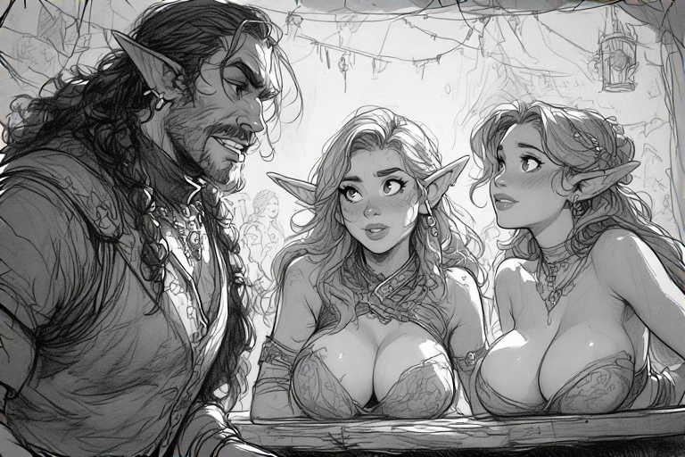
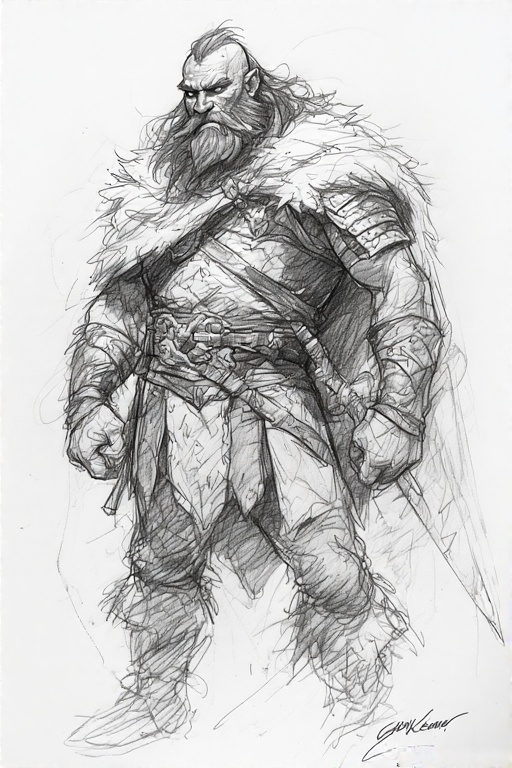
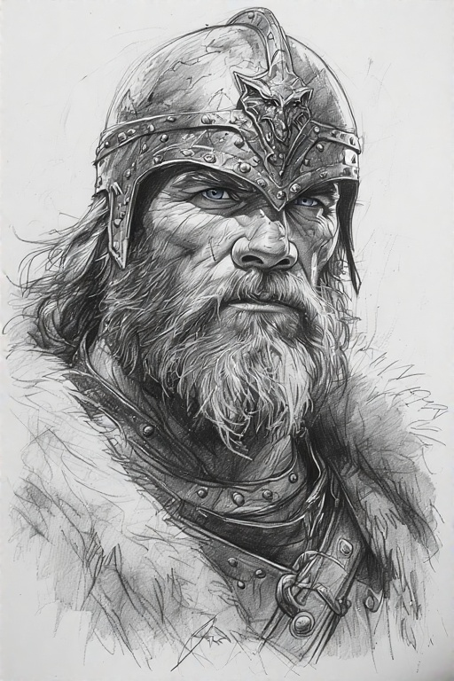
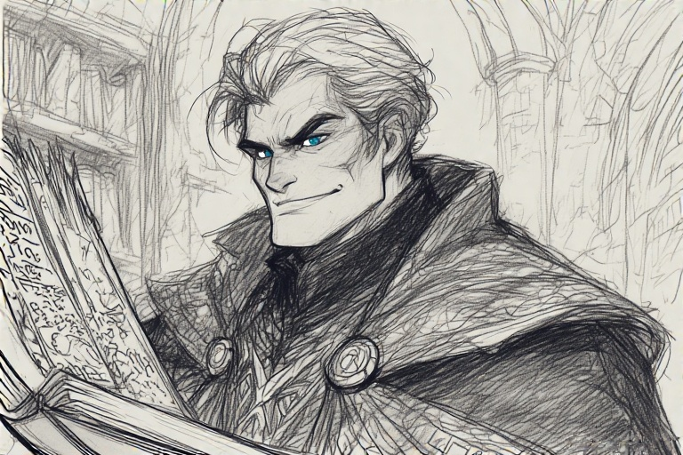

üè∞ Adventure Overview
Welcome to the epic tale of heroes brought together by fate and forged by adventure!
The Story So Far
In the swampy estuaries of the Coastal Plains, destiny called forth unlikely heroes. Wulfgar Ironfist, a battle-hardened barbarian seeking vengeance for his fallen village, found his path intertwined with companions who would become his brothers-in-arms.
Together with Tyrone Blackrod and Nodrog Son of Nodrog, they were summoned before the mystical being Zargon, who recognized in them the potential to become legends. Their quest would take them through treacherous dungeons, face ancient evils, and test the very bonds of their friendship.
This is their story...
⚔️ The Heroes
Background: Born in the harsh North, raised by warrior clans. After orcs destroyed his village, he embarked on a quest for vengeance that led him to his current companions.
Personality: A man of few words who lets his actions speak. Deeply suspicious of magic, fiercely loyal to friends, and lives for the glory of battle. His stoic nature hides a sharp mind and unbreakable spirit. The Tavern Bards sing the tales of his exploits, evil men flee his sword, while comely wenches flock to his side.

Background: From Elftown's bustling streets, rejected high society for the shadows. Learned thievery and charm from the city's underbelly before discovering magical abilities. A mysterious mentor taught him arcane ways, shaping him into a formidable hero.
Personality: Cocky and wisecracking with a heart of gold. Sharp tongue and sardonic humor can charm or cut down. Fiercely loyal despite his bravado. Master of improvisation who turns every situation into a thrilling escapade.

Background: Born into a family of renowned treasure hunters and ale connoisseurs, Nodrog was destined for a life of adventure. His father, Nodrog the Elder, was lost in a quest to conquer the dreaded dungeons of Zargon, leaving behind tales of valor and a legacy of unfinished business. Raised in the bustling underground city of Stonehold, where the clang of hammer on anvil was as common as tavern laughter, Nodrog learned the art of the blacksmith and the subtleties of diplomacy in crowded pubs and markets. His mother, a fierce warrior in her own right, taught him the importance of honor and the strength of family bonds. His lineage was one of craftsmen and heroes, raised on epic ballads of ancestral deeds.
Personality: Nodrog is a cheerful, hearty soul who approaches life with a pint-sized optimism that belies his formidable combat skills. He's a lover of fine ales, tall tales, and a good laugh, often using humor to diffuse tense situations. His loyalty to his comrades is unshakeable, and he's not above risking his own hide for a friend in need. Beneath the jovial exterior lies a sharp mind and a fierce warrior's spirit - stubbornly resilient and never backing down from a challenge, especially when it involves defending his honor or the treasure he seeks. His love for ale is matched only by his love for battle, and he's been known to toast the memory of defeated foes with the very beverage they were too slow to claim. His optimism is as boundless as the caverns he explores, facing each new challenge with a grin and a mug held high.
Background: Once a hero corrupted by the very power he sought to control, Zargon's journey into the arcane led him down a path of madness and ambition. After being defeated by the legendary Rogar, he now plots his return from his twisted dungeon, weaving grand designs that only he can fully comprehend. His soul is a tapestry of shadow and ambition.
Personality: A master of dramatic theatrics who revels in his role as dungeon master. Impatient with those who fail to grasp his schemes, he taunts enemies with smug superiority while maintaining a twisted code of honor. His voice thunders through his domain, driven by an insatiable hunger for knowledge and power. Despite his corruption, a spark of his former heroic self lingers, making him a complex and fascinating adversary who challenges heroes through wit and strategy rather than mere brute force.
üó∫Ô∏è Game Board & Maps

This is where maps, battle grids, and visual references for our adventures will be displayed.
üìú Adventure Log
Casts Rock Skin spell for protection
Stares critically at Tyrone's magical display
Searches for secret doors, finds none, grabs ale instead
Opens door, reveals 2 Goblins at table
Tyrone: Partial hit on Goblin #1
Nodrog: 2 devastating hits, severely wounds goblin
Wulfgar: 2 crushing blows, severely wounds Goblin #2
Opens door, sees Abomination & Orc, immediately shuts it
Nodrog splits from party, Abomination gives relentless chase
Abomination hits Nodrog hard (down to 6 HP)
Tyrone delivers precise killing blow to Abomination
Wulfgar slays the Orc with brutal efficiency

Tyrone opens room with 2 Dread Warriors
Nodrog stumbles critically (rolled 2)
Dread Warrior strikes Tyrone for 2 damage
Wulfgar delivers devastating 3-hit killing blow to final Dread Warrior
Tyrone opens door to the imposing throne room
Heroes split and flee strategically, systematically eliminate guards
Tyrone slays first Orc: "That's right, homie. Sit down."
Wulfgar & Tyrone coordinate attack on second Orc
Verog stands and attacks with stone fists, hits Wulfgar for 2
Tyrone attacks with precision for 1 hit
Wulfgar's assault reduces Verog to 1 HP
Verog strikes Tyrone desperately for 2
Wulfgar delivers the killing blow - Verog crumbles to dust!
Discovers 120 gold pieces in Verog's treasure hoard!
Turn 20: Wandering Orc - Wulfgar slays immediately
Turn 21: 2 Goblins - Quick and decisive elimination
Turn 26: Orc & Goblin at table - Both defeated swiftly
Turn 28: 2 Skeleton ambush - Destroyed with prejudice
Tyrone opens door: Ancient Mummy & 2 Zombies await
Zombies swarm Wulfgar (reduced to 1 HP)
Mummy's curse cripples Wulfgar - falls unconscious
Mummy overwhelms and defeats Nodrog
Tyrone stands alone against the darkness
Tyrone destroys the mummy and final zombie in heroic combat
Nodrog orders his fifth tankard of the evening, wounds fully healed through the magic of dwarven ale and good company.
He slams his tankard down, foam spilling across the wooden table as the tavern crowd cheers. His eyes sparkle with the joy of survival and the promise of future adventures.
A brash young warrior approaches Wulfgar, boasting of his strength. The barbarian's eyes narrow with interest rather than anger.
Without a word, Wulfgar rolls up his sleeve, revealing battle-hardened muscle. His grip is steady, his gaze unwavering.
Two beautiful tavern wenches flank the charismatic elf, hanging on his every word as he recounts the climactic battle.
They lean closer, eyes wide with admiration. One traces the outline of his pointed ear while the other refills his wine cup.
Zargon's crystal ball swirls with visions of the celebrating heroes. His expression is thoughtful, calculating.
Ancient tomes float around him as he researches deadlier creatures and more complex traps. The final door was merely the beginning.
Though they feast and celebrate tonight, each hero knows this is merely an interlude. The final door remains unopened, its secrets calling to them.
The adventure ends, but the legend has only just begun. Somewhere in the distance, ancient doors creak open, and new challenges await the Bold Brotherhood.
The Tavern Celebration
Tyrone plans his next adventure
The Grizzled Warrior
A battle-scarred veteran with flowing beard and fur-trimmed armor, his weathered face telling stories of countless battles
The Battle Champion
A noble warrior in ornate helmet and mail, his stern gaze reflecting the honor and determination of ancient heroes
The Scholar-Adventurer
A cunning figure with knowing smile, clutching ancient tomes while his eyes gleam with both wisdom and mischief